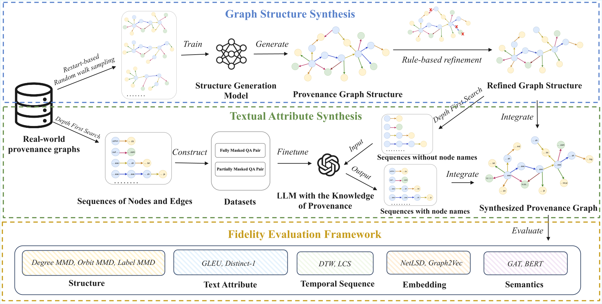
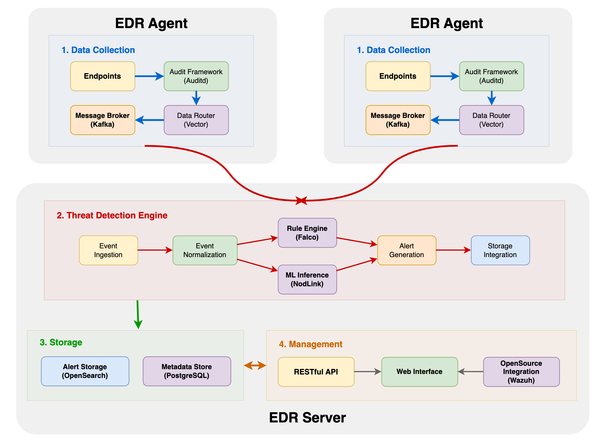
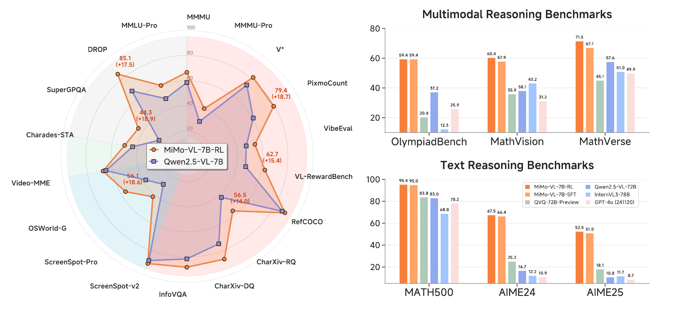
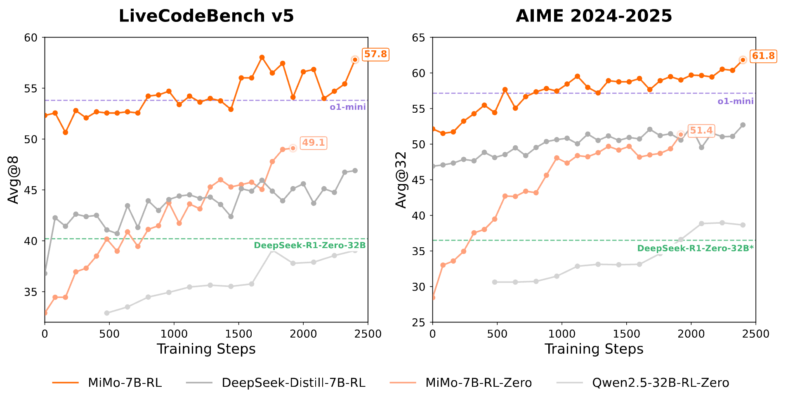

About
Hi, I am a Master's student at the School of Computer Science, Peking University, supervised by Prof. Ding Li, Prof. Yao Guo, and Prof. Xiangqun Chen. Previously, I obtained my B.S. degree from School of Computer Science and Technology, Shandong University, where I ranked 1st out of 197 students.
My research interests lie in System Security, LLM Safety, and Anomaly Detection. I have extensive internship experience at top-tier labs including Ant Group, Xiaomi, Microsoft Research Asia, and Baidu.
Education
|
Master in Computer Science 2024 - Present Peking University, Beijing, China. Advisors: Prof. Ding Li, Prof. Yao Guo, and Prof. Xiangqun Chen |
|
|
B.S. in Computer Science (Elite Class) 2020 - 2024 Shandong University, Qingdao, China. GPA: 93.44/100 (Rank: 1/197) Advisors: Prof. Xiuzhen Cheng and Prof. Liqiang Nie |
Research and Publications

No Data? No Problem: Synthesizing Security Graphs for Better Intrusion Detection
Submitted to USENIX Security 2026

SYSARMOR: The Practice of Integrating Provenance Analysis into Endpoint Detection and Response Systems
Accepted by Prism Workshop @ NDSS 2026

MiMo-VL Technical Report
Technical Report, 2025

MiMo: Unlocking the Reasoning Potential of Language Model – From Pretraining to Posttraining
Technical Report, 2025
Intern Experiences
|
Research Intern, Tianqian Lab. Multi-turn jailbreak attack and RAG knowledge extraction attack. |
|
|
Research Intern, Post-training Group @ LLM-Core. Systematic LLM evaluation. |
|
|
Research Intern, Social Computing Group. Aligning LLMs for conversational recommendations. |
|
|
Machine Learning Intern, Search Strategy Department. LLM for Baidu Baike entry quality enhancement. |
Selected Honors & Awards
- Outstanding Graduates of Shandong University (Top 1%), 2024
- National Scholarship (Top 1%), 2022
- First Class Academic Scholarship (Top 5%), 2021, 2022, 2023
- Zhiyang Scholarship (Top 1%), 2022
- Linglong Scholarship (Top 5%), 2021
- Honorable Prize in Mathematical Contest in Modeling, 2022
Teaching
Teaching Assistant- Introduction to Computing, Peking University Undergraduate Course - Fall 2025